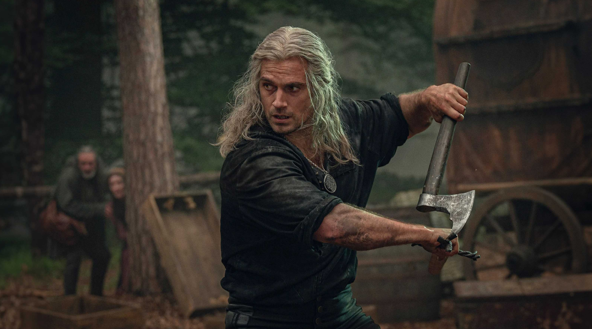
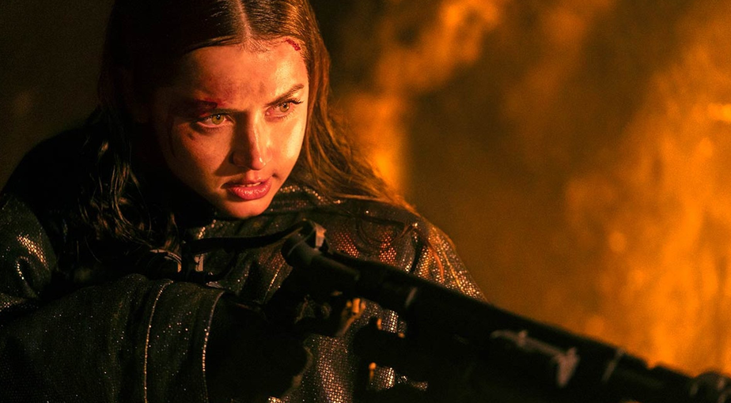
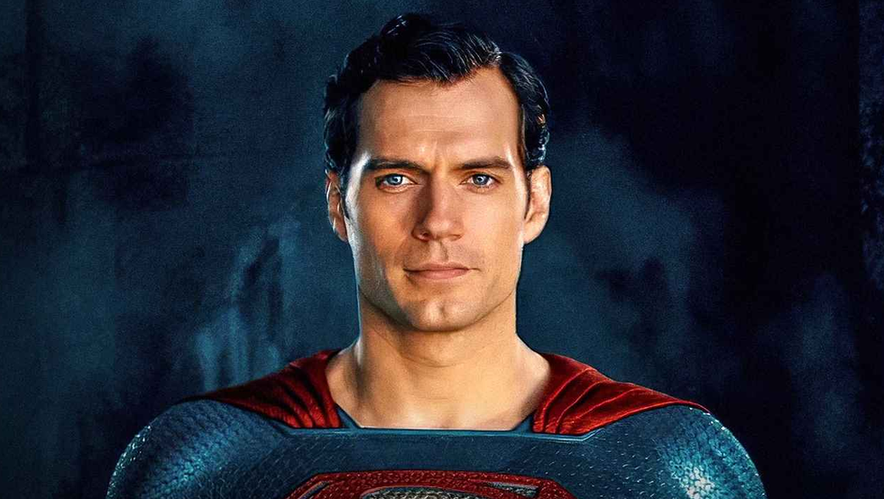

如果你看过 Netflix 的《猎魔人》，你一定知道亨利·卡维尔有多适合演一个沉默寡言、剑术高超、在怪物横行的世界里独行的战士。杰洛特这个角色让他成为了一代奇幻片迷心中的白月光。

现在，他将在查德·斯塔赫斯基执导的《高地人》重启版中饰演康纳·麦克劳德。而斯塔赫斯基则是《疾速追杀》系列的导演，那个把基努·里维斯训练成“杀神”的男人。这意味着你将看到《猎魔人》的奇幻底蕴与《疾速追杀》的极致动作设计碰撞在一起。剑与魔法，血与荣耀，一个长生不死者在现代都市中挥剑的画面，光是想想就让人肾上腺素飙升。

除了卡维尔，还有戴夫·巴蒂斯塔饰演反派库尔干，凯伦·吉兰、杰瑞米·艾恩斯、杰曼·翰苏，韩国演员全钟瑞、华语动作演员张晋等实力派演员加盟。剧本则由莱恩·康道尔（《龙之家族》）、迈克尔·芬奇等人共同打磨。
一个横跨欧美与亚洲、又能打又能演的组合，本身就透露出一个信号：这不只是情怀翻拍。
康纳·麦克劳德，到底是个什么角色？
要理解这个角色，得先理解《高地人》的世界观：世上存在一群长生不老的剑客，他们穿越时空彼此厮杀，只有被另一名剑客用古剑斩首了，才会真正死去。而最终活下来的那一个，将赢得传说中的"奖赏"。
康纳·麦克劳德就是这样一个永生者。他16世纪出生在苏格兰，此后几百年里走遍世界、精研剑术，只为了在最终的对决中活下来。除了不死之身，他还拥有强化的再生能力。而当一名永生者被斩杀时，会爆发能量，胜者可以吸收败者的力量与记忆。
原版1986年那部电影里有句被奉为圣经的台词："只可能有一个"（There can be only one），说的就是这场跨越世纪的淘汰赛，终点就是那份神秘的奖赏。这种"全世界都在追杀你，而你必须赢"的孤绝感，几乎是给卡维尔量身定做的。

当一把利剑，横跨数百年光阴，只为决出最后的幸存者。2027 年，这部奇幻动作大片，很有可能成为亨利・卡维尔继超人、杰洛特之后，又一个具有标志性的银幕角色。